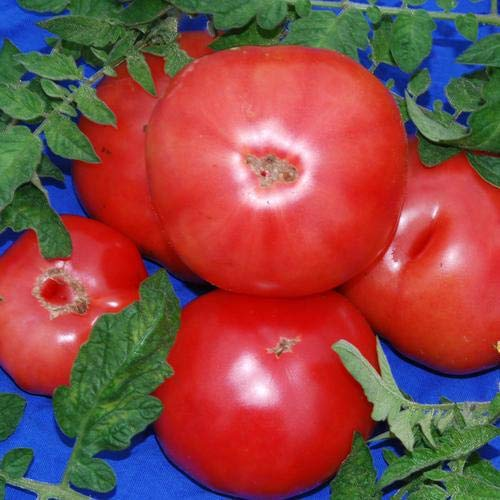
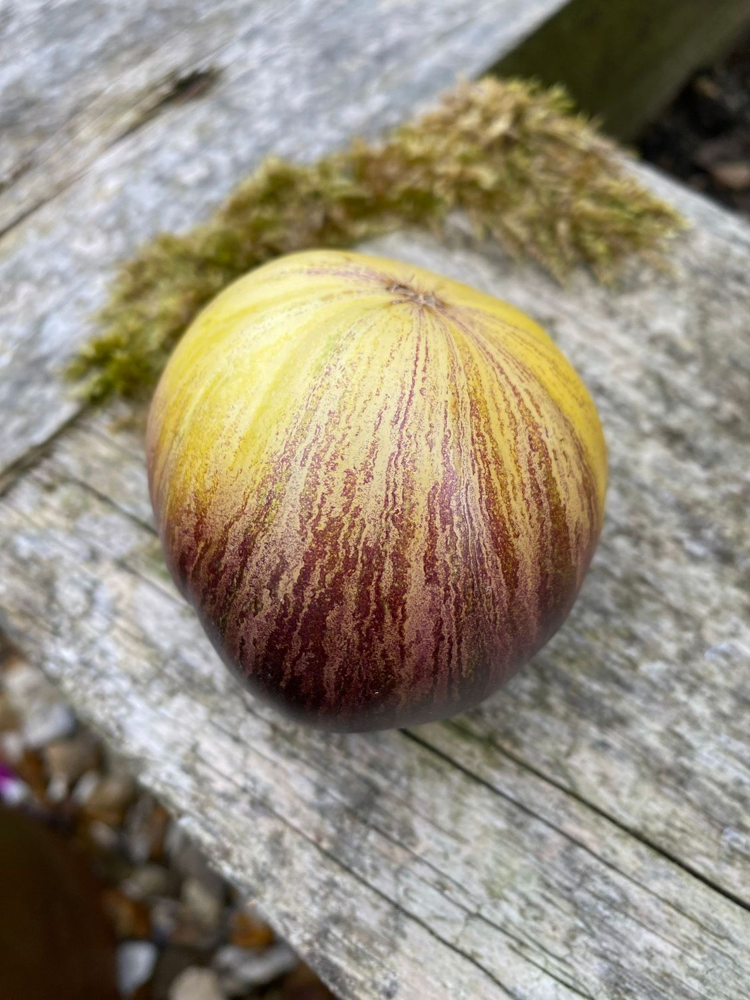
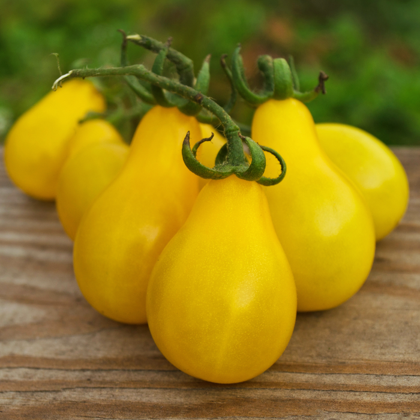
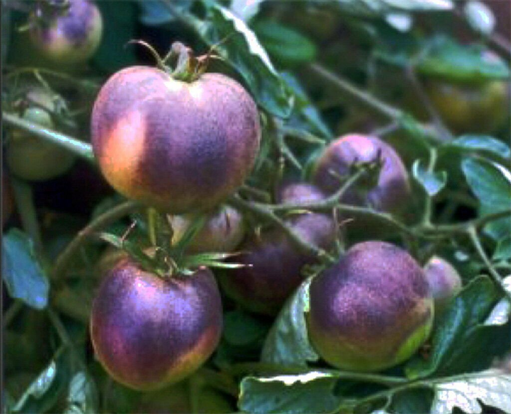
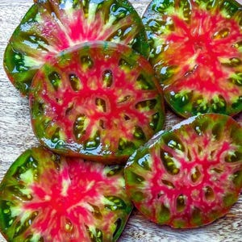
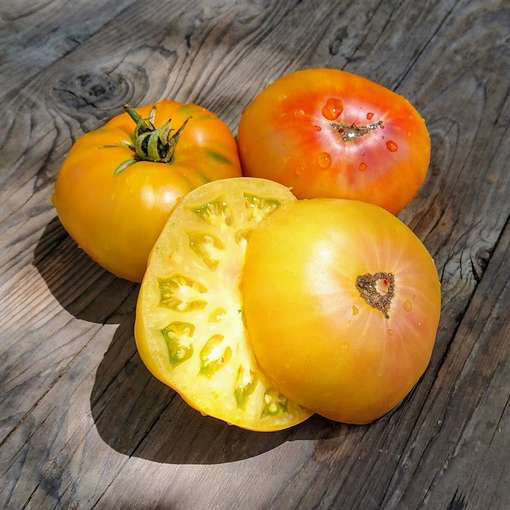
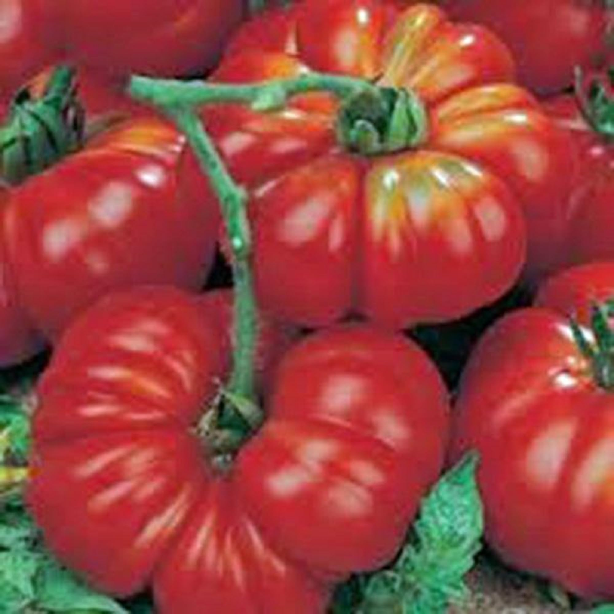
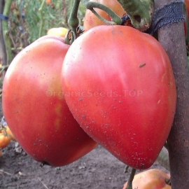
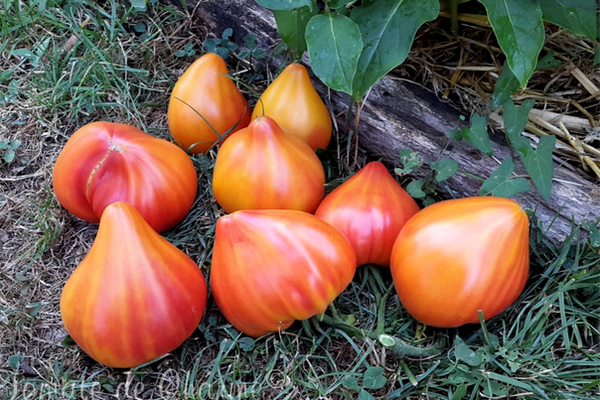
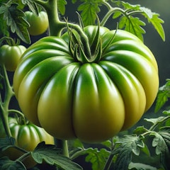

Variétés anciennes et patrimoniales cultivées en pleine terre dans le sud de la France.
Semences reproductibles, pas d'hybrides F1.

🎨 Eva's Amish Stripe
Spectaculaire tomate bicolore striée d'origine Amish. Gros fruits aplatis et côtelés, mêlant rouge/rose et jaune doré en stries verticales. Chair dense, sucrée et fruitée, peu de graines. Saveur complexe, douce et parfumée. Un régal en salade en grosses tranches.

⭐ Rebel Starfighter Kayleigh Anne
Variété artisanale spectaculaire aux stries jaune doré et rouge-pourpre. Gros fruit côtelé de type beefsteak, chair dense et savoureuse. Saveur complexe, fruitée et sucrée. Une des plus belles tomates striées bicolores, aussi belle que bonne.

🍐 Poire Jaune
L'une des plus anciennes variétés de tomates cerises encore cultivées. Petit fruit en forme de poire caractéristique, jaune vif, en longues grappes abondantes. Saveur douce et sucrée, peu acide, avec une note fruitée. Plante très productive, presque envahissante si non taillée. Se ressème facilement.

🫐 Blue Pitts
Tomate anthocyanique spectaculaire. La peau présente une coloration bleu-violet foncé sur les parties exposées au soleil, avec un fond rouge à maturité. Saveur complexe, légèrement plus acide, avec des notes fruitées. L'exposition au soleil intensifie la couleur bleue. Les anthocyanes sont des antioxydants bénéfiques.

🖤 Ananas Noire
Spectaculaire à la coupe ! Gros fruit aplati et côtelé, couleur vert-brun-rouge foncé à l'extérieur. La chair intérieure est marbrée de vert, rouge, jaune et pourpre. Saveur exceptionnelle, complexe et riche, sucrée avec des notes fruitées rappelant l'ananas. Considérée parmi les meilleures tomates gustatives.

🍍 Ananas
Reine des tomates anciennes ! Très gros fruit aplati et côtelé, jaune-orangé à l'extérieur avec des stries rouges. La chair est marbrée de jaune et rouge en tranches, très charnue avec peu de graines. Saveur remarquablement sucrée et fruitée, très peu acide, avec des notes tropicales évoquant l'ananas.

🔴 Grosses Tomates (Russes) Grosses Tomates
Variété ancienne russe impressionnante par sa taille. Chair dense et charnue avec peu de jus et peu de graines, tranche bien. Saveur riche et douce, bien équilibrée. Bonne tolérance au froid grâce à ses origines nordiques. Limiter à 3-4 bouquets pour favoriser les gros fruits.

❤️ Cœur de Bœuf (Caton)
La vraie Cœur de Bœuf italienne (Cuor di Bue), variété ancienne fixée non hybride. Gros fruit en forme de cœur, chair très dense et fondante, presque crémeuse, avec très peu de graines. Saveur douce et sucrée, peu acide. Peau fine sensible à l'éclatement — arrosage régulier important.

💗 Batanaya
Variété sibérienne rustique en forme de cœur. Chair dense, fondante et juteuse, couleur rose-framboise. Saveur douce et sucrée, faiblement acide. Excellente résistance au froid et aux conditions difficiles. Précoce pour un gros fruit. Bonne production même en été court.

✨ Zolotye Gory Medeo
Variété russe dont le nom signifie « Montagnes dorées de Medeo ». Gros fruit en forme de cœur allongé, orange doré avec des reflets rosés. Chair dense, sucrée et parfumée avec très peu d'acidité. Productive et régulière, excellente en salade.

🌟 Délice d'Or
Variété française ancienne à la couleur dorée lumineuse. Saveur douce, sucrée et délicate, avec une acidité très faible. Goût fin et fruité, légèrement miellé. Parfaite pour ceux qui trouvent les tomates rouges trop acides. Bonne productivité, s'adapte bien à la culture en pot.
📷 Crédits photos
Photos utilisées à titre illustratif. Sources et droits appartiennent à leurs auteurs respectifs.
- Eva's Amish Stripe — tomatofifou.com
- Rebel Starfighter Kayleigh Anne — tomatedecharme.com
- Poire Jaune — cloversgarden.com
- Blue Pitts — ecrater.com
- Ananas Noire — etsy.com
- Ananas — merakiseeds.com
- Grosses Tomates (Russes) — amazon.com
- Cœur de Bœuf (Caton) — organicseeds.top
- Batanaya — organicseeds.top
- Zolotye Gory Medeo — tomatedecharme.com
- Délice d'Or — summerwindsnursery.com